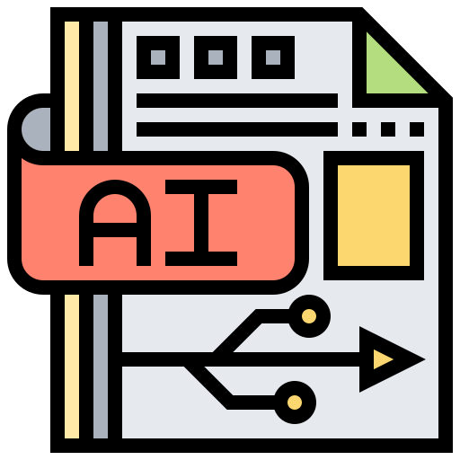
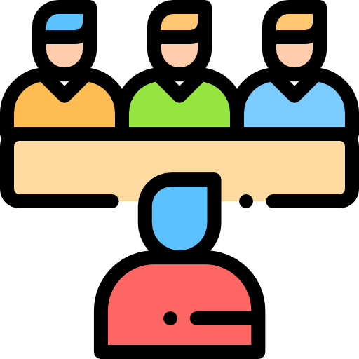
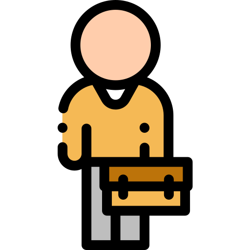

HOME > 채용안내 > 모집과정
모집과정
충분한 이해를 통해 서로에게 좋은 친구가 되는 과정입니다.
BGF리테일의 새 친구가 되는 과정을 소개합니다!
-
 서류접수
서류접수
-  AI인성검사
-  1차 면접
-  인턴실습
- 최종 면접
-
 최종입사
최종입사
-
01
- 서류접수
-
지원자의 기본 정보를 파악하는 단계입니다.
기본 항목의 점수화보다는 각 소개 항목을 꼼꼼히 검토해, 지원자의 역량을 충분히 파악할 수 있도록 노력하고 있습니다.
-
02
- AI인성검사
-
AI를 통해 성향과 역량을 알아봅니다.
별도의 면접장 방문 없이 지원자가 원하는 장소에서 진행됩니다.
-
03
- 1차면접
-
현재 고객과 사회의 좋은 친구로 역량을 펼치고 있는 선배들과 가치관, 역량에 대한 이야기를 나눕니다.
지원자의 생각을 충분히 듣고, 이해하기 위해 선배들도 열린 마음으로 다가가고 있습니다.
-
04
- 인턴실습
-
CU 직영점 근무를 통해 자신의 역량을 펼치며, BGF의 업무가 지원자의 적성에 맞는지 판단할 수 있는 기회입니다.
고객과 스태프, 선배 매니저를 직접 만나 다양한 경험을 하며, 현장에 대해 배울 수 있습니다. BGF는 어떻게 고객과 사회의 '좋은 친구'가 되고 있는지 직접 확인해보세요!
-
05
- 최종면접
-
좋은 친구가 되기 위한 최종 관문, BGF를 이끄는 최고 경영진을 만납니다.
-
06
- 최종입사
-
BGF와 함께 하게 되어 반갑습니다!
우리 서로,그리고 고객과 사회에 더 좋은 친구가 되기 위해 함께 나아갑시다.
좋은 친구들의 성장을 위해 더 든든한 BGF가 되겠습니다.